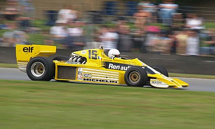
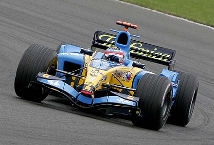
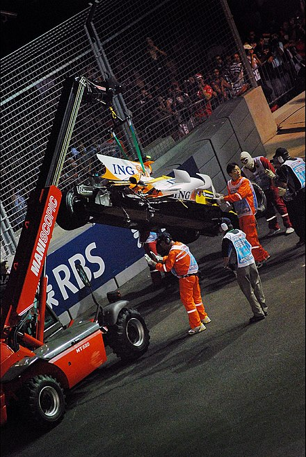
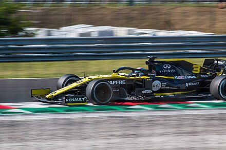

Il primo ingresso di Renault in Formula 1 avvenne attraverso la controllata Renault Sport. Renault disputò quattro gare del campionato 1977 con una singola macchina, guidata da Jean-Pierre Jabouille. La Renault RS01 si faceva notare per il suo motore, un Gordini V6 da 1 500 cm³ turbocompresso, il primo motore di questo tipo usato nella storia della Formula 1, collaudato inizialmente sulla Alpine A500. Il motore derivava dal V6 di 1 997 cm³ di Formula 2, da cui era stata derivata anche la versione sovralimentata che veniva usata dalla stessa Renault nelle gare di durata sul modello Renault Alpine A442. La stagione 1978 non fu migliore della prima, considerando i quattro ritiri consecutivi dovuti a rotture del motore. Nel 1979 Renault decise di aumentare il proprio impegno, schierando due vetture e affiancando a Jabouille un altro francese, René Arnoux. Verso metà stagione, entrambi i piloti ebbero a disposizione la RS10 ad effetto suolo, necessaria per lottare nel gruppo di testa. Alle sue spalle, Arnoux dovette accontentarsi del terzo posto, dopo una lotta serratissima con Gilles Villeneuve su Ferrari nei giri conclusivi.

Nel 1981 la Renault assunse Alain Prost, confermando la natura tutta francese del team. Nonostante la minore esperienza rispetto ad Arnoux, Prost riuscì a conquistare un posto di riguardo in squadra per il contributo al lavoro di sviluppo. Arnoux fu meno costante, arrivando a mancare la qualificazione a Zolder, e ottenendo al massimo un secondo posto in Austria. A fine stagione la Renault risultò terza, con 54 punti.
La stagione 1982 fu del tutto particolare, e anche la Renault fu vittima di prestazioni altalenanti e polemiche interne alla squadra, nonostante avesse confermato la collaudata coppia di piloti della stagione precedente. Prost aprì la stagione con due vittorie, imponendosi come candidato al titolo, mentre Arnoux, dopo il terzo posto della prima gara, non ebbe risultati di rilievo per la prima parte della stagione, costellata di ritiri. Anche Prost fu vittima di una serie di ritiri, per cui non incrementò il suo punteggio fino alla seconda parte della stagione. In questo modo danneggiò decisamente la rincorsa di Prost al mondiale.
Arnoux vinse ancora il Gran Premio d'Italia, quando aveva già annunciato il suo passaggio in Ferrari, mentre Prost ottenne solo un altro secondo posto e non riuscì ad arrivare a giocarsi il titolo. La Renault confermò il terzo posto della stagione precedente, aumentando ancora i punti ottenuti.
Gli altri pretendenti al titolo, mano a mano che la stagione avanzava, si ridussero a Nelson Piquet, con la Brabham-BMW, e Arnoux su Ferrari. Nelle settimane successive alla fine del mondiale, si susseguirono indiscrezioni secondo cui la Brabham di Piquet avesse utilizzato carburante non regolamentare in alcune gare, ma la Renault preferì non cercare di ottenere il titolo per via giudiziaria, dopo averlo perso in pista, e la cosa non ebbe seguito concreto. Nonostante il titolo mancato, il 1983 sarebbe rimasta la migliore stagione della prima fase di impegno della squadra francese, che giunse seconda fra i costruttori, con 79 punti.
Il primo partner ad utilizzare i motori Renault fu il Team Lotus, che li utilizzò dal 1983 al 1986, per poi passare ai motori Honda nel 1987. Nel 1984 si affiancò una fornitura alla Ligier, favorita dalla nazionalità francese. In realtà il disimpegno dall'attività in Formula 1 doveva essere totale, ma si decise di onorare i contratti in essere con i tre team clienti fino alla loro scadenza. Alla fine del campionato 1986 si chiuse anche l'attività di fornitura dei motori turbo V6 ai clienti.
Il partner scelto per questa nuova fase tecnica fu la Williams, che dopo aver perso i motori Honda alla fine del campionato 1987 e utilizzato i motori Judd aspirati nel 1988, cercava un partner di elevato profilo tecnico per tornare nel novero dei protagonisti. Dal 1992 Renault tornò a fornire anche una seconda squadra, ancora la Ligier, fino a tutto il 1994. La stagione 1994 vide il titolo piloti sfuggire ai piloti Williams, ma per il campionato 1995 Renault fornì i motori ad entrambi i contendenti al mondiale, ossia Williams e Benetton. Al termine del campionato 1997, Renault si ritirò nuovamente dal ruolo di fornitore ufficiale di motori, anche se le unità utilizzate in quella stagione furono la base da cui la consociata Mecachrome ricavò i motori da fornire ai propri clienti nelle stagioni successive, prima con tale nome e con quello di Playlife, poi con quello di Supertec.
Nel campionato 2001 Renault si ripresentò al via della stagione di Formula 1, fornendo i motori alla Benetton, nell'ambito del progetto di tornare a competere come costruttore completo, con l'acquisto della stessa Benetton, che dal campionato 2002 al campionato 2011 avrebbe corso come Renault F1. Dal campionato 2007 è tornata anche l'attività di Renault come fornitore di motori ad altre squadre, con la fornitura alla Red Bull, collaborazione che è proseguita fino al 2018 . Nella stagione 2011, alla squadra austriaca si aggiunse la Caterham , che li utilizzò fino alla stagione 2014.
Dal 2021 lo storico marchio rimane fornitore esclusivamente dell'Alpine F1 Team, nuova denominazione della scuderia Renault.
 Fernando Alonso impegnato al Gran Premio di Gran Bretagna 2005. La stagione 2005 vide l'introduzione di alcune nuove regole tecniche, che avrebbero portato un rimescolamento dei valori al vertice. In Renault, a sostituire Trulli al fianco del confermato Alonso, venne ingaggiato un altro italiano, Giancarlo Fisichella, che aveva già corso per la Renault, quando questa forniva i motori alla Benetton nel 2001. Il suo compagno di squadra invece si aggiudicò tre gare in successione, ponendosi al comando della classifica mondiale. In una stagione che vide il predominio delle vetture con gomme Michelin e il crollo di Michael Schumacher e quindi della Ferrari, la lotta per il titolo si restrinse presto ad Alonso e a Kimi Räikkönen, su McLaren-Mercedes. L'unico momento difficile per la Renault fu la trasferta nordamericana, con un doppio ritiro nel Gran Premio del Canada e la mancata partenza nel Gran Premio degli Stati Uniti . A parte questo momento di appannamento, Alonso gestì in maniera eccellente il vantaggio accumulato nella prima parte di stagione, e ottenne altre tre vittorie e quattro secondi posti, arrivando alla conquista matematica del titolo già al Gran Premio del Brasile, con due gare ancora da disputare. La stagione si chiuse quindi con un doppio trionfo, il primo per una squadra ufficiale Renault, dall'esordio in Formula 1. Flavio Briatore tra i suoi due piloti, Giancarlo Fisichella e Alonso, dopo la doppietta Renault nel Gran Premio della Malesia 2006. Una nuova modifica al regolamento tecnico in materia di pneumatici riportò alla ribalta la Ferrari che, con Schumacher, si sarebbe dimostrata il principale avversario della squadra francese. L'inizio della stagione fu analogo alla precedente, con Alonso in grado di ottenere risultati positivi con grande costanza e Fisichella meno costante, anche se a volte abbastanza veloce da risultare vincente. A metà stagione il vantaggio di Alonso su Schumacher era di 25 punti. La seconda parte della stagione si dimostrò più problematica, con una sola vittoria per lo spagnolo. Quando la strada sembrava in discesa per la Ferrari, che era al comando anche della penultima gara in Giappone, Schumacher fu vittima a sua volta di una rottura del motore, lasciando la vittoria ad Alonso. Lo spagnolo si presentò quindi con 10 punti di vantaggio all'ultima gara in Brasile, dove gli sarebbe bastato terminare la gara nei punti per vincere in ogni caso il titolo. Alonso, pur senza correre rischi inutili, giunse comunque secondo a Interlagos, vincendo il titolo piloti e permettendo alla Renault di vincere anche il titolo costruttori, per il secondo anno consecutivo, con 206 punti.
In merito alla vittoria di Alonso nel Gran Premio di Singapore 2008, dopo circa un anno, il 30 agosto 2009, la FIA apre un'inchiesta sull'incidente accaduto a Piquet, durante il tredicesimo giro della gara. La televisione brasiliana Rede Globo sostiene che l'incidente è stato fittiziamente causato al fine di favorire la vittoria di Alonso. La FIA ha convocato per il 21 settembre 2009 la Renault per esaminare il caso in questione. In seguito alla inchiesta della FIA in merito all'incidente la Renault comunica il 16 settembre 2009 che Flavio Briatore e Pat Symonds hanno lasciato la scuderia. Il Consiglio Mondiale della FIA decide la squalifica a vita dalle competizioni motoristiche per Briatore e una squalifica per 5 anni per Symonds, inoltre la Renault viene squalificata per due anni ma con la condizionale. Non vi sono condanne né per Piquet né per Alonso. La Renault nomina come nuovo team manager, fino alla fine della stagione, l'ex responsabile dei motori Bob Bell. L'anno comincia bene per la scuderia grazie al 5 posto di Alonso in Australia, ma già dalla successiva tappa in Malesia si capisce come il team non abbia assolutamente ritrovato la competitività dei tempi d'oro.  Il 16 dicembre, la Renault conferma di aver ceduto il 75% del controllo della scuderia francese al fondo lussemburghese Genii Capital di proprietà di Gérard Lopez. Il team mantiene il nome di Renault F1 Team anche nel campionato 2010, continuando anche a fornire i propulsori alla Red Bull. Robert Kubica alla guida della Renault al Gran Premio del Bahrein 2010.
A settembre 2020, viene annunciato che a partire dal 2021 la scuderia prenderà il nome di Alpine F1 Team, al fine di promuovere il marchio francese. Viene così abbandonata dopo 44 anni la denominazione Renault F1, anche se lo storico marchio rimarrà comunque in qualità di fornitore dei motori. Il 14 maggio 2020 viene annunciato il trasferimento di Daniel Ricciardo alla McLaren a partire dalla stagione 2021. L'11 gennaio 2021 l'amministratore delegato del Gruppo Renault Luca de Meo nomina il manager Laurent Rossi come CEO del marchio Alpine, e arrivano le dimissioni del team principal Cyril Abiteboul. Il 17 gennaio, dopo le indiscrezioni dei giorni precedenti, arriva l'ufficialità dell'ingaggio dell'ex team principal della Suzuki in MotoGP Davide Brivio in qualità di direttore sportivo della scuderia. Al Gran Premio d'Ungheria, il francese Ocon riporta la scuderia alla vittoria dopo 13 anni, dal Gran Premio del Giappone 2008 in cui fu Alonso a salire sul gradino più alto del podio. Questi risultati permettono al team di chiudere il campionato con un totale di 155 punti e di confermare per il terzo anno consecutivo la quinta posizione nel mondiale costruttori. Nella stagione 2022 viene confermata la line-up dei piloti dell'anno precedente.  L'11 febbraio viene annunciata la collaborazione con la società austriaca BWT, che ricopre il ruolo di title sponsor della scuderia, ufficialmente rinominata BWT Alpine F1 Team. Nella prima metà del campionato le prestazioni dell'Alpine sono inferiori a quelle del 2022, con qualche piazzamento a punti di rincalzo da parte di entrambi i piloti, nonostante Ocon riporti il team sul podio a due anni di distanza a Monaco, giungendo terzo, e Gasly ottenga lo stesso risultato nella Sprint del Gran Premio del Belgio, ripetendosi subito dopo la pausa estiva in gara nel Gran Premio d'Olanda, conquistando il suo primo podio con la scuderia. Ma questi risultati uniti ad altri piazzamenti a punti fino al termine della stagione non evitano al team transalpino di scivolare al sesto posto nella classifica costruttori, con un totale di 120 punti.